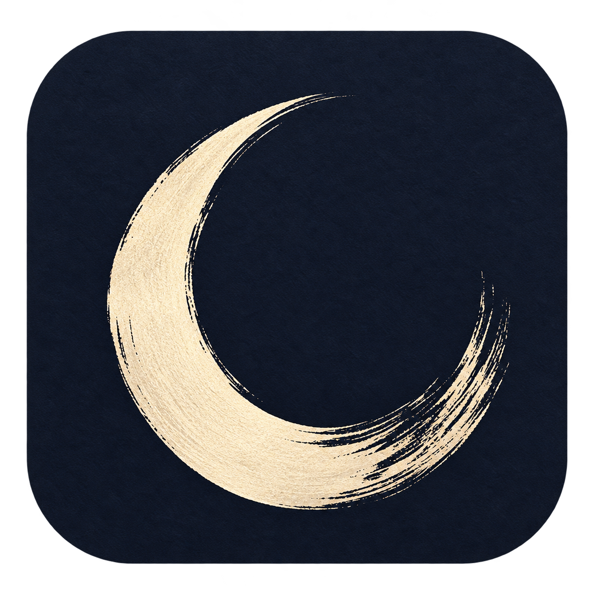

Asteria 100% Rust Core · No Legacy C++
WINDOWS NATIVE TSF × LOCAL GPU AI

AI を内蔵した、純 Rust 製 日本語 IME。
前の文脈まで読み切るローカル GPU AI（Vulkan / CUDA）と、ゼロから組み上げた高速ネイティブ TSF エンジンが、Space 1 回で正しい変換を導きます。
100%Usability / 同音語 / 慣用句
CUDA + VulkanGPU 自動判定・完全オフライン
19 Cratesメモリ安全・再起動不要更新
01 / NATIVE RUST COREレガシー改造ではない純ネイティブ設計
02 / CONTEXTUAL AI前文読解 + 読み完全照合 + 連濁対応
03 / ZERO TELEMETRYすべてローカル処理・通信ゼロ
Windows 10 / 11 x64 · Asteria-Setup.exe · Apache-2.0 OR MITv5.5.1
github.com/aruiki/Asteria-Japanese-IME